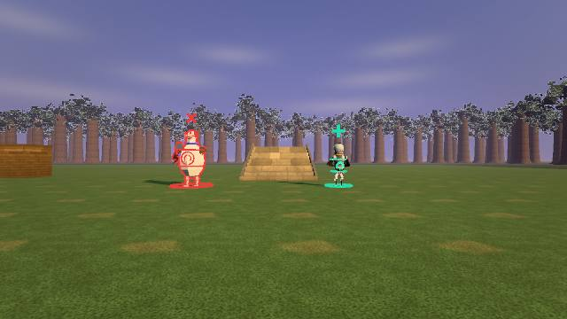
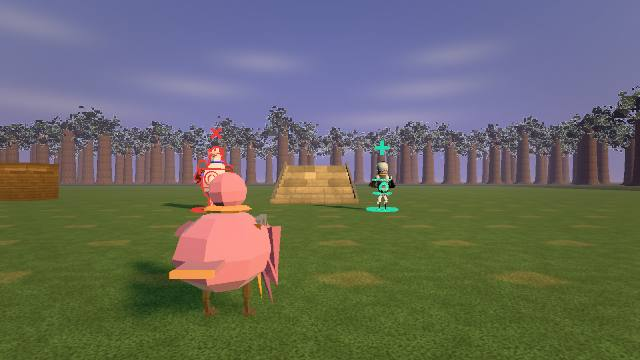
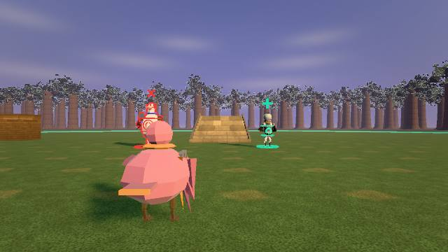
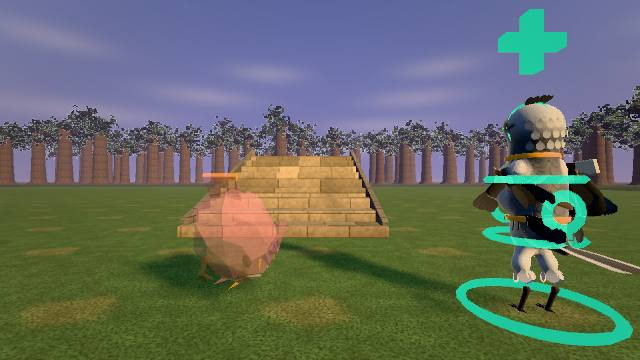

Kiwi Playable
Assassin · Playable since Stage 4
Appearance: a round, hairy brown ball on strong legs, with no visible wings or tail and a very long thin down-curved bill that probes the ground ahead; whiskers at the bill's base. Reads as "furry ball with a long curved needle" (the Hummingbird hovers and blurs; the Kiwi walks and is round).
How to play
Assassins pick off one target at a time. Wait in cover, strike a bird that has strayed from its flock, and leave before the answer arrives. Mobility is your health bar.
Kiwi fights with the Burrow Blunderbuss, which hits instantly and spreads 6 pellets per shot. Damage drops off between 8 m and 18 m, and head hits are beak shots worth ×1.65. Every level above 1 is a Molt: +34 max HP per level; +3% gun damage of base per level; +1 Song power per level; +3 melee damage per level.
Burrow out of danger and resurface under an enemy. Night Sense shows which enemy heroes are wounded. Probe weakens armour, so open with it. Ambush Pit is a finisher: tunnel to a squishy bird and erupt.
Abilities
Four abilities. Slots 1 to 3 unlock at level 1, the ultimate at level 6. Each can be upgraded three times, for 1, 2, 5 AP, in order; see Ability Points. The shortest cooldown in the kit is Probe at 9 s.

1. Burrow
Go underground for up to 4 s: intangible and invisible, 9 m/s, no attacks. Resurfacing (press again, or when time runs out) knocks up enemies within 3 m for 0.6 s and deals 80 + 0.8 x SP Song damage.
- Tier 1 · 1 AP+1 s duration (5 s) duration +1
- Tier 2 · 2 AP-4 s cooldown cooldown -4 s
- Tier 3 · 5 APResurfacing heals you 15% of max HP heal pct +0.15

2. Probe
Stab with your bill (3 m reach): 90 + 0.9 x SP Song damage and -15% Talon resist for 5 s.
- Tier 1 · 1 AP+25 damage (115 + 0.9 x SP) damage +25
- Tier 2 · 2 AP-2 s cooldown cooldown -2 s
- Tier 3 · 5 APAlso roots 0.75 s root +0.75

3. Night Sense
For 6 s: true sight within 20 m, and every enemy hero below 50% HP within 50 m is revealed to your flock.
- Tier 1 · 1 AP+3 s duration (9 s) duration +3
- Tier 2 · 2 APTrue sight 30 m
- Tier 3 · 5 AP+20% move speed for the duration

4. Ambush Pit
Tunnel to a point within 20 m over 1.0 s (intangible, invisible), then erupt: enemies within 6 m take 220 + 1.6 x SP Song damage, are knocked up 1.0 s, then slowed 40% for 2 s.
- Tier 1 · 1 AP+10 m range (30 m) range +10 m, dist +10
- Tier 2 · 2 AP+60 damage (280 + 1.6 x SP) damage +60
- Tier 3 · 5 AP-30 s cooldown (70 s) cooldown -30 s
Since Stage 4. See all heroes.